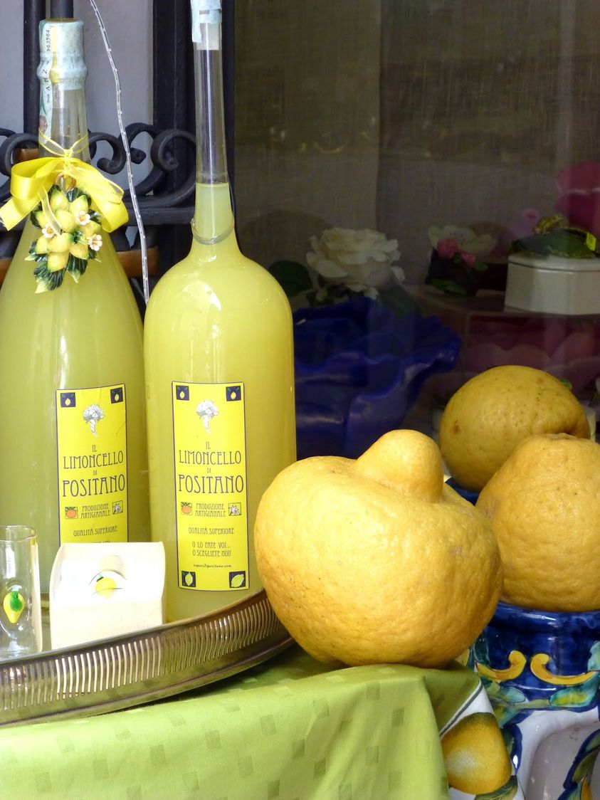
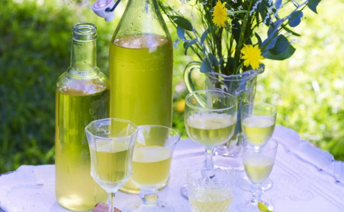
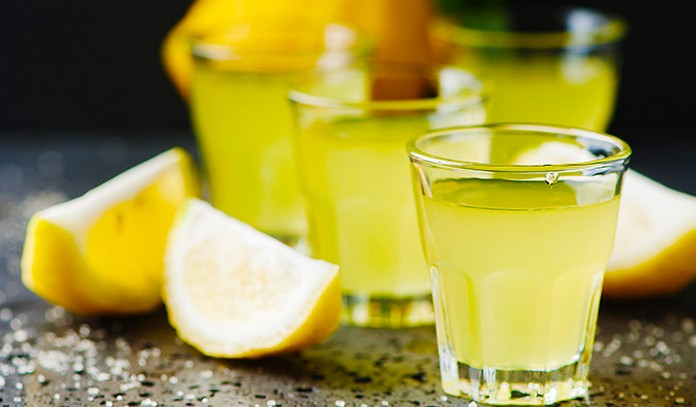

One of Italy’s most famous product is their Limoncello. Families have passed down recipes for generations, as every one has their own Limoncello recipe! L'un des produits les plus célèbres d'Italie est leur Limoncello. Les familles se transmettent des recettes depuis des générations, car chacun a sa propre recette de Limoncello !Comment faire du Limoncello (recette italienne)
En fait, cette boisson au citron est désormais considérée comme la boisson nationale de l'Italie et peut être trouvée dans les magasins et les restaurants. Cette boisson au citron est merveilleuse comme nettoyant pour le palais ou comme boisson après le dîner. Il est toujours servi bien frais pendant les mois d'été.  Activer le son :